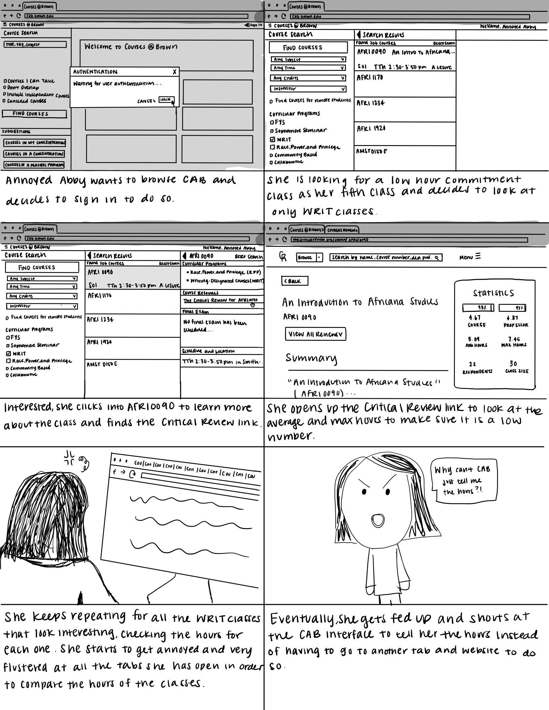

The goal of the Personas and Storyboards assignment is to step into a user's shoes to
observe
real users interacting with an interface, interview these individuals about their experiences, create
personas based on these users, and illustrate a storyboard for one the personas.
Selected accessible
interface: C@B (Courses at Brown)
The problem that the interface is trying to solve is the ease and ability to register for and select courses at Brown. The key components include the sign in button, which allows you to sign in to your Brown account, a search bar to find specific courses, and drop down and check boxes to filter through classes.
Key Observations:
Questions Asked:
Summarized Responses:
Annoyed Abby is a junior at Brown University looking for an easy WRIT course. She is annoyed at having to open new tabs for each class's Critical Review to look at the average number of hours spent on the class. The persona represents users who are more familiar with C@B and uses filters to look for specific classes. It also represents users looking to view statistics on classes since Annoyed Abby is opening tabs for each class to view statistics while filtering through WRIT courses.
Curious Carl is a freshman at Brown University looking for a First Year Seminar to register for. He is rushing to find classes that still have spots available before registration opens up so that he can register and get a spot in a first year seminar. The persona represents users who are not as familiar with the interface and do not know how to use filters to look through classes because Curious Carl is unsure of how to use C@B efficiently with filters, thus he is manually searching for specific classes to register for.
The storyboard is based on the persona of Annoyed Abby.
